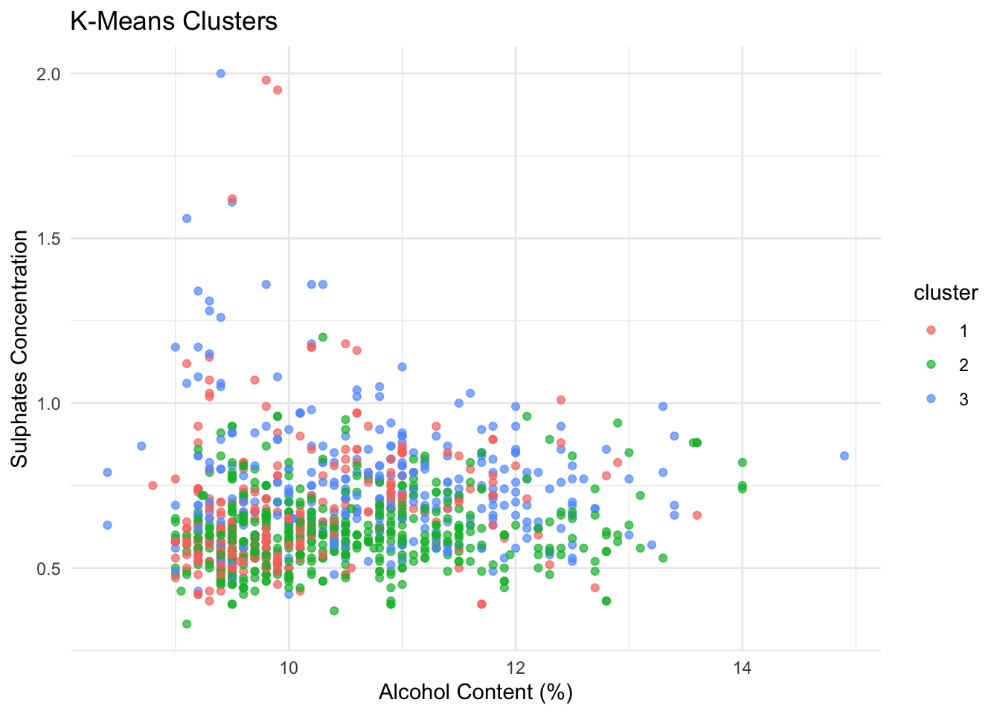

library(ggplot2) # data visualization
library(dplyr) # data wrangling
library(caret) # train/test split
library(class) # KNN methodsPour Decisions: Predicting Wine Quality with Data
Summary
The goal of this project was to examine how the chemical properties of red wine relate to wine quality and whether wine quality can be predicted using statistical and machine learning methods. Exploratory analysis showed that alcohol content had a positive relationship with wine quality, while volatile acidity had a negative relationship.
Linear regression and KNN regression were used to predict wine quality. Both models showed moderate predictive performance, suggesting that wine quality depends on complex relationships among chemical properties that may not be fully captured by simple models.
Motivation and Context
Wine quality is influenced by chemical characteristics such as alcohol content, acidity, sugar levels, and sulfur compounds. Understanding how these properties relate to wine quality can help producers improve consistency and production methods. In this project, the Wine Quality dataset was analyzed to examine how chemical measurements of Portuguese red wines relate to quality ratings.
The main objective was to identify which chemical properties are most associated with wine quality and determine whether wine quality can be predicted using statistical and machine learning methods. Exploratory data analysis, clustering, linear regression, and KNN regression were used to analyze relationships within the data and evaluate predictive performance.
Packages Used In This Analysis
This section lists the packages used in the analysis. You should have a single chunk that loads the packages followed by a description of why you are using each package. Please use individual package names rather than tidyverse and tidymodels, to make it clear which specific packages are being used.
You should follow the template table below. Each row of the table contains the package name in brackets, a link to the package website, and (on the right side) a description of what you used the package for. If you can’t find a link to the package website, or you’re having trouble getting the link to work, don’t worry about including it.
| Package | Use |
|---|---|
| class | knn methods |
| readr | to import the CSV file data |
| dplyr | to massage and summarize data |
| caret | to split data into training and test sets |
| ggplot2 | to create nice-looking and informative graphs |
Data Description
The dataset used in this analysis is the Wine Quality dataset, which contains chemical measurements for 1,599 Portuguese “Vinho Verde” red wine samples. The dataset includes variables such as acidity, sugar content, pH, alcohol level, and a wine quality rating.
The data was collected through laboratory analysis and made publicly available through the UCI Machine Learning Repository. For modeling, the data was split into training and testing sets using a 70/30 split, allowing the models to be trained and evaluated on separate data.
wine <- read.csv("winequality-red.csv", sep = ";")Data Wrangling (Optional Section)
set.seed(153)
trainIndex <- createDataPartition(wine$quality, p = 0.7, list = FALSE)
train <- wine[trainIndex, ]
test <- wine[-trainIndex, ]Exploratory Data Analysis
Univariate:
ggplot(train, aes(x = quality)) +
geom_histogram(binwidth = 1, fill = "skyblue", color = "black") +
labs(title = "Distribution of Wine Quality")
ggplot(train, aes(x = alcohol)) +
geom_histogram(fill = "orange", color = "black") +
labs(title = "Distribution of Alcohol Content")`stat_bin()` using `bins = 30`. Pick better value `binwidth`.
Relationship
ggplot(train, aes(x = alcohol, y = quality)) +
geom_point(alpha = 0.5) +
geom_smooth(method = "lm", se = FALSE, color = "blue") +
labs(title = "Wine Quality vs Alcohol Content",
x = "Alcohol Content (%)",
y = "Wine Quality Rating") +
theme_minimal()`geom_smooth()` using formula = 'y ~ x'
ggplot(train, aes(x = volatile.acidity, y = quality)) +
geom_point(alpha = 0.5) +
geom_smooth(method = "lm") +
labs(title = "Volatile Acidity vs Quality")`geom_smooth()` using formula = 'y ~ x'
Description:
The exploratory analysis examined how chemical measurements relate to wine quality ratings. Most wines received quality scores between 5 and 6, indicating that the dataset mainly contains average-quality wines. Alcohol content (% ABV) appeared slightly right-skewed, with most wines having moderate alcohol levels.
Alcohol content showed a positive relationship with wine quality, suggesting that wines with higher alcohol percentages tended to receive higher ratings. In contrast, volatile acidity, which measures acetic acid levels in the wine, showed a negative relationship with quality. These findings suggest that alcohol content and volatile acidity are important predictors of wine quality.
Modeling
set.seed(156)
# remove response variable
wine_scaled <- scale(train[, -12])
# elbow method
wss <- c()
for(i in 1:10){
km <- kmeans(wine_scaled,
centers = i,
nstart = 25)
wss[i] <- km$tot.withinss
}
plot(1:10, wss,
type = "b",
xlab = "Number of Clusters",
ylab = "Within-Cluster Sum of Squares",
main = "Elbow Method for K-Means Clustering")
set.seed(156)
# choose number of clusters based on elbow plot
kmeans_model <- kmeans(wine_scaled,
centers = 3,
nstart = 25)
train$cluster <- as.factor(kmeans_model$cluster)ggplot(train,
aes(x = alcohol,
y = sulphates,
color = cluster)) +
geom_point(alpha = 0.7) +
labs(title = "K-Means Clusters",
x = "Alcohol Content (%)",
y = "Sulphates Concentration") +
theme_minimal()
Revised Description:
Several improvements were made based on feedback from the original Project 2 submission. The revised analysis provides stronger justification for the modeling choices, including using the elbow method to determine the number of clusters in the k-means analysis.
The interpretation of the clustering results was also improved by acknowledging the overlap among clusters rather than claiming clearly separated groups. In addition, wine quality was treated consistently as a quantitative response variable by using KNN regression instead of KNN classification. The exploratory data analysis section was also strengthened by explaining chemical variables in more accessible language and including measurement units for readers unfamiliar with wine chemistry.
Insights/Conclusion
Conclusion:
The goal of this project was to investigate how chemical properties of red wine relate to wine quality and whether wine quality can be predicted using statistical and machine learning methods. Exploratory data analysis showed that alcohol content (% alcohol by volume) had a positive relationship with wine quality, while volatile acidity, which measures acetic acid levels in the wine, had a negative relationship with quality. These findings suggest that wines with higher alcohol content and lower acidity generally tended to receive higher quality ratings.
K-means clustering was used to explore patterns among the wines based on their chemical measurements. Although some structure was identified, the clusters showed substantial overlap, suggesting that the wines do not separate into clearly distinct groups. Linear regression and KNN regression were then used to predict wine quality, and both models demonstrated moderate predictive performance. Overall, the analysis highlights how machine learning and statistical methods can be used to better understand factors that influence wine quality.
Limitations and Future Work
One limitation of this analysis is that both the linear regression and KNN regression models showed only moderate predictive performance, suggesting that wine quality is difficult to predict using the available variables alone. Wine quality ratings are somewhat subjective because they are based on human evaluations, and factors such as personal taste preferences may influence the scores. In addition, the models may struggle to accurately predict wines with unusually high or low quality ratings because those observations are less common in the dataset.
Another limitation is that linear regression assumes a linear relationship between predictors and the response variable, which may not fully capture the complex relationships among chemical properties and wine quality. While KNN regression can model nonlinear relationships, its performance is sensitive to the choice of \(k\) and the scaling of variables.
Future work could improve the analysis by collecting additional variables related to wine production, taste, or regional characteristics. More advanced machine learning methods, such as random forests or boosted trees, could also be explored to better capture nonlinear patterns and interactions among variables.